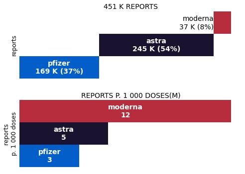
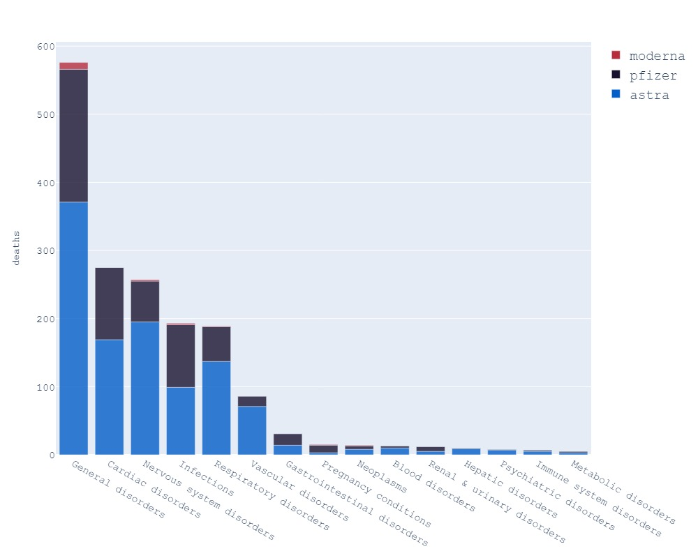

UK Gov Yellow Cards Reports
A weekly report covering adverse reactions to COVID-19 vaccines produced by GOV.UK
In th UK, the MHRA (Medicines and Healthcare products Regulatory Agency) authorised Pfizer, Moderna and AstraZeneca in the UK. The MHRA continually monitors safety during widespread use of a vaccine. Part of our monitoring role includes reports of suspected side effects. Any member of the public or health professional can submit suspected side effects through the Yellow Card scheme. The nature of Yellow Card reporting means that reported events are not always proven side effects. Some events may have happened anyway, regardless of vaccination.
This safety update report is based on detailed analysis of data up to As of
For the COVID-19 Pfizer/BioNTech Vaccine, COVID-19 Vaccine AstraZeneca and COVID-19 Vaccine Moderna the overall reporting rate is around around 4 Yellow Cards per 1,000 doses administered and 19 suspected deaths per million jabs injected.
Source
All data are from gov.uk. In a pdf format, one can download the adverse reactions report (ADR) for each vaccine (Astra Z,Pfizer,Moderna). The report details the different reactions per category and if the reaction suspectedly led to death. Pfizer report can for example be downloaded using that link
I aggregated for the 3 vaccines (Astra, Pfizer and Moderna) the different reactions and suspected deaths (if any) in a comprehensive table.That table can be downloaded using the link below:
suspected fatalities reported
As of , for the UK, yellow cards reports account for :
On average, 19 deaths for 1 million injections were reported in the Yellow Cards reports.
AstraZeneca with 24 deaths/1Mios jabs

Moderna with 11 ADR per 1000 jabs

History of fatal and non fatal reactions
Graphics of the number of fatalaties and adverse reactions reportsYellow cards reports collections on a weekly basis since November 2021.
Fatal - Reactions - Reports - Monthly injections - Total injections
What reactions caused deaths?
We now dig into the most common reactions linked to deaths:
- General disorders (sudden deaths,...)
- Cardiac disorders (myocardies, cardiac arrest)
- Nervous disorders (hemorrhagies)
- Infections (virus included Covid)
- ...
